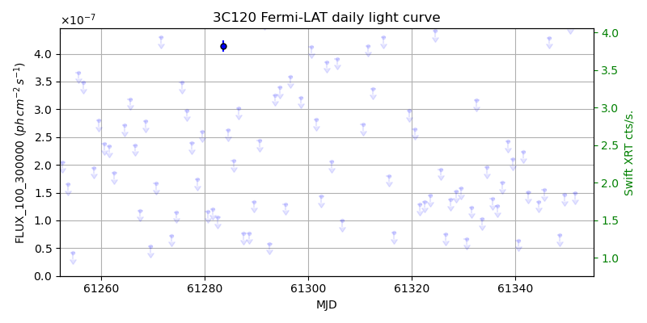
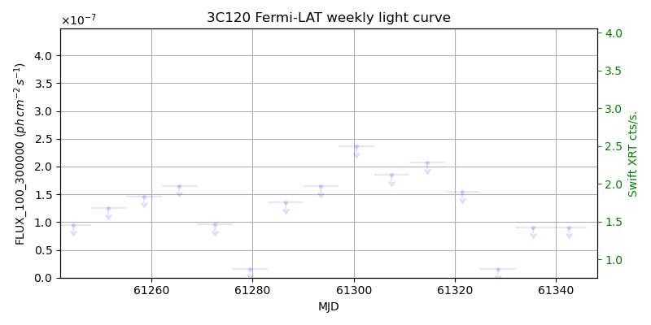
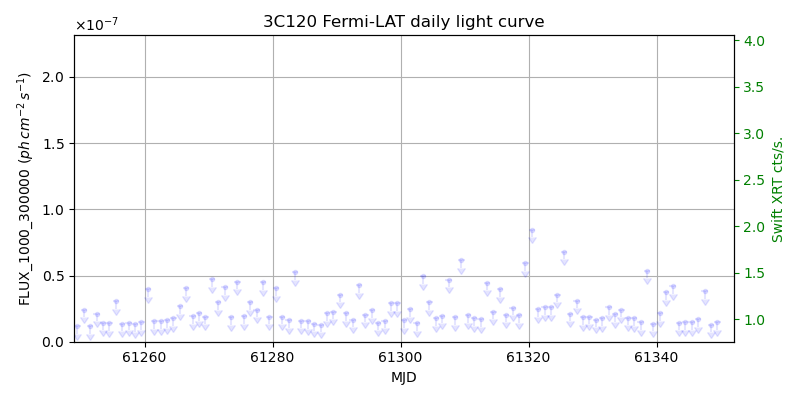
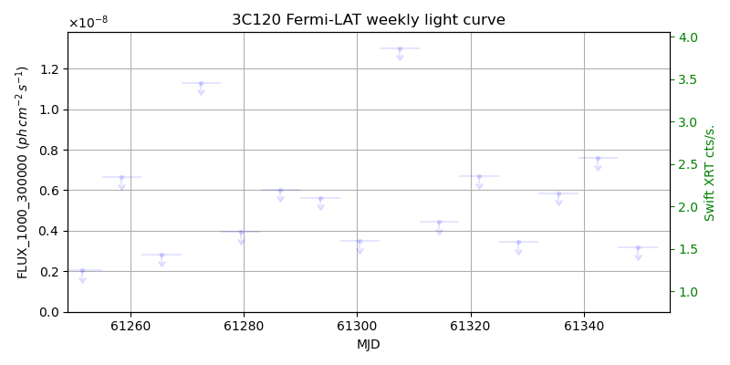

LAT Lightcurve site: https://fermi.gsfc.nasa.gov/ssc/data/access/lat/msl_lc/source/3C_120
Swift site: https://www.swift.psu.edu/monitoring/source.php?source=3C120
NED: Query
Time of last update of this page: UT: 2026-11-13 16:15 (MJD: 61357.677)
| Property | Value |
|---|---|
| R.A. | 4:33:11.04 |
| Dec. | 5:21:14.4 |
| z | 0.033 |
| 3FGL SpectrumType | |
| 3FGL PL Index | -1.00 |
| 3FGL Flux_100_300000 | -1.00e+00 |
| 3FGL Flux_1000_300000 | -1.00e+00 |
| 3FGL Flux >200 GeV | -1.00e+00 |
| 3FGL Extrap. Crab >200 GeV | -1.00 |
| 3FGL Flux After EBL Absorption >200GeV | -1.00e+00 |
| 3FGL EBL Crab Fraction >200GeV | -1.00 |

| MJD | dMJD | Flux | dFlux | Frac3FGL | FracCrab>200GeV | EBLFracCrab>200GeV |
|---|---|---|---|---|---|---|
| 61348.50 | 0.50 | 7.37e-08 | 0.00e+00 | 0.00 | 0.00 | -0.00 |
| 61349.50 | 0.50 | 1.47e-07 | 0.00e+00 | 0.00 | 0.00 | -0.00 |
| 61350.50 | 0.50 | 4.55e-07 | 0.00e+00 | 0.00 | 0.00 | -0.00 |
| 61351.50 | 0.50 | 1.49e-07 | 0.00e+00 | 0.00 | 0.00 | -0.00 |
| 61352.50 | 0.50 | 6.47e-07 | 0.00e+00 | 0.00 | 0.00 | -0.00 |

| MJD | dMJD | Flux | dFlux | Frac3FGL | FracCrab>200GeV | EBLFracCrab>200GeV |
|---|---|---|---|---|---|---|
| 61321.50 | 3.50 | 1.54e-07 | 0.00e+00 | 0.00 | 0.00 | -0.00 |
| 61328.50 | 3.50 | 1.51e-08 | 0.00e+00 | 0.00 | 0.00 | -0.00 |
| 61335.50 | 3.50 | 9.06e-08 | 0.00e+00 | 0.00 | 0.00 | -0.00 |
| 61342.50 | 3.50 | 9.05e-08 | 0.00e+00 | 0.00 | 0.00 | -0.00 |
| 61349.50 | 3.50 | 1.61e-07 | 0.00e+00 | 0.00 | 0.00 | -0.00 |

| MJD | dMJD | Flux | dFlux | Frac3FGL | FracCrab>200GeV | EBLFracCrab>200GeV |
|---|---|---|---|---|---|---|
| 61348.50 | 0.50 | 1.29e-08 | 0.00e+00 | 0.00 | 0.00 | -0.00 |
| 61349.50 | 0.50 | 1.45e-08 | 0.00e+00 | 0.00 | 0.00 | -0.00 |
| 61350.50 | 0.50 | -1.00e+00 | 0.00e+00 | 0.00 | 0.00 | -0.00 |
| 61351.50 | 0.50 | 3.43e-08 | 0.00e+00 | 0.00 | 0.00 | -0.00 |
| 61352.50 | 0.50 | 2.47e-08 | 0.00e+00 | 0.00 | 0.00 | -0.00 |

| MJD | dMJD | Flux | dFlux | Frac3FGL | FracCrab>200GeV | EBLFracCrab>200GeV |
|---|---|---|---|---|---|---|
| 61321.50 | 3.50 | 6.70e-09 | 0.00e+00 | 0.00 | 0.00 | -0.00 |
| 61328.50 | 3.50 | 3.44e-09 | 0.00e+00 | 0.00 | 0.00 | -0.00 |
| 61335.50 | 3.50 | 5.85e-09 | 0.00e+00 | 0.00 | 0.00 | -0.00 |
| 61342.50 | 3.50 | 7.60e-09 | 0.00e+00 | 0.00 | 0.00 | -0.00 |
| 61349.50 | 3.50 | 3.16e-09 | 0.00e+00 | 0.00 | 0.00 | -0.00 |
--------------------------------------------------------- Using user-supplied coords: 4:33:11.04 5:21:14.4 2000 --------------------------------------------------------- FLWO UT night of: 2026-11-14 Local Sid. @ Midnight: 03:09 Sunset (-15.0) (local, UT): 18:35 01:35 Sunrise (-15.0) (local, UT): 05:42 12:42 Moonrise (local, UT): Moonset (local, UT): 20:50 03:50 Moon phase: 0.22 --------------------------------------------------------- AzTime LSID UT Obj_el Obj_az Mn_el Mn_az Sep. --------------------------------------------------------- 18:35 21:44 01:35 -7.8 78.7 20.1 218.2 139.0 19:05 22:14 02:05 -0.7 82.7 16.0 223.7 138.9 19:35 22:44 02:35 5.0 86.6 11.6 228.6 138.8 20:05 23:14 03:05 11.3 90.6 6.9 233.2 138.7 20:35 23:44 03:35 17.7 94.6 2.0 237.3 138.5 21:05 00:14 04:05 24.0 98.8 -2.2 241.2 138.3 21:35 00:44 04:35 30.3 103.4 -9.0 244.8 138.2 22:05 01:14 05:05 36.5 108.5 -14.6 248.2 138.0 22:35 01:44 05:35 42.4 114.4 -20.4 251.4 137.8 23:05 02:14 06:05 48.1 121.4 -26.2 254.5 137.6 23:35 02:44 06:35 53.3 129.9 -32.1 257.5 137.4 00:05 03:14 07:05 57.8 140.5 -38.1 260.6 137.1 00:35 03:45 07:35 61.3 153.6 -44.2 263.8 136.9 01:05 04:15 08:05 63.3 169.1 -50.2 267.1 136.6 01:35 04:45 08:35 63.6 185.9 -56.3 270.9 136.4 02:05 05:15 09:05 62.1 202.0 -62.4 275.3 136.1 02:35 05:45 09:35 59.0 215.9 -68.4 281.1 135.8 03:05 06:15 10:05 54.7 227.2 -74.2 289.9 135.5 03:35 06:45 10:35 49.7 236.2 -79.6 306.2 135.2 04:05 07:15 11:05 44.1 243.6 -83.2 343.5 134.9 04:35 07:45 11:35 38.3 249.8 -82.1 35.1 134.6 05:05 08:15 12:05 32.2 255.1 -77.4 61.2 134.3 05:35 08:45 12:35 25.9 259.8 -71.8 73.4 134.0 05:42 08:52 12:42 24.6 260.8 -70.5 75.2 133.9 --------------------------------------------------------- Dark hours >55 deg.: 3.29 srcstart (UT): 2026-11-14 06:45 srcend (UT): 2026-11-14 10:03